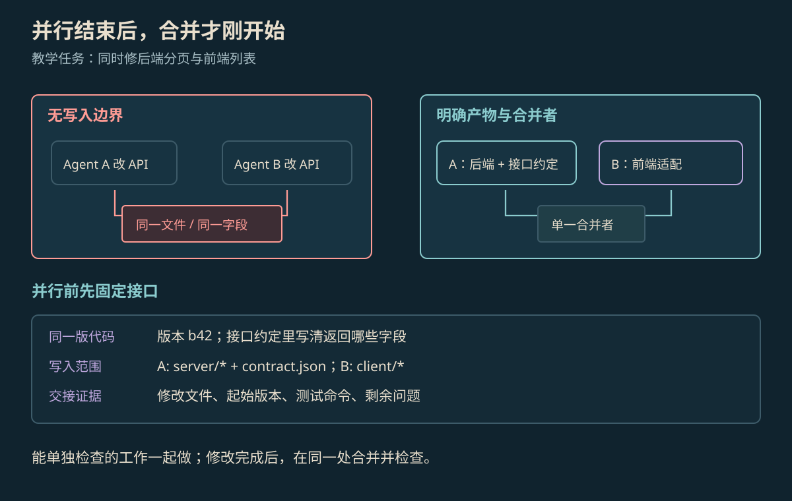

MULTI-AGENT SYSTEMS
多 Agent 协作原理
多 Agent 协作把任务分给几个 Agent，再交换结果并合到一起。要能真正完成任务，需要分清谁负责什么、彼此传什么，以及最后由谁检查整体结果。
本页目录
多个 Agent 怎样一起做事#
这里的 Agent 指能使用工具、根据结果继续行动的 AI 程序。多 Agent 系统把任务分给几个这样的程序，它们各自拿到任务说明和相关资料，再通过消息、文件或共同记录交换结果。它们可以使用同一个模型，也可以使用不同模型和工具。
一个 Agent 自己工作时，可以在同一份记录里保持进度。换成多个 Agent，哪些内容要交给谁、结果怎样接上，就要说清楚。角色更多不代表答案自动更可靠。AutoGen、MetaGPT 与 Anthropic 的研究系统采用了不同的分工办法。[1][2][3]
常见的分工方式#
| 方式 | 怎样交接 | 需要解决什么 |
|---|---|---|
| 协调者分派 | 一个 Agent 分任务，其他 Agent 做完后交回，由它汇总 | 任务边界与返回格式是否清楚 |
| 依次接力 | 前一个 Agent 的结果交给下一个 | 上一步的错误和遗漏会不会传下去 |
| 同时做，再合并 | 互不等待的部分同时执行，最后组合结果 | 是否使用同一版资料，有没有互相覆盖 |
| 多方讨论 | 按约定顺序或选择规则交换消息 | 谁接着说、何时结束、进度是否一致 |
“有几个 Agent”和“谁决定下一步”是两件事。下一步可以由固定程序选择，也可以让模型根据进度决定，不必每次都让所有 Agent 商量。
还没确定的前后关系，不能靠同时开工消除。例如前后端接口还在变化时，可以先分别调查需求，再确定共同格式，之后各自开发；否则节省的等待时间可能变成返工。
交接时要说清哪些事#
派任务时要写清目标、输入、大家基于哪一版代码、要返回什么，以及怎样检查完成。多个 Agent 会修改同一文件或执行同一动作时，还要指定负责者，避免覆盖。也可以让它们分别产生候选，再由一个负责合并的程序处理。
下面是分页任务的教学约定。后端维护 server/ 与 contract.json，前端维护 client/ 并读取同一份接口说明；双方交回改动、起始版本、测试命令与未解决问题。接口约定就是双方共同遵守的字段和数据格式。
{
"task": "cursor-pagination",
"base_revision": "b42",
"response_contract": {"items": "Item[]", "next_cursor": "string|null"},
"workers": {
"backend": {"write_set": ["server/**", "contract.json"]},
"frontend": {"write_set": ["client/**"], "reads": ["contract.json"]}
},
"handoff": ["patch", "base_revision", "test_command", "open_issues"],
"merge_owner": "coordinator"
}写在任务里的范围只是约定。真要限制谁能改哪些文件，还需要工具或工作区执行限制。如果两个任务必须改同一文件，可以先后修改，或各自产生独立候选后再合并。
示例：前后端怎样接好分页#
教学任务要给列表增加分页。后端返回 items 与 next_cursor，前端却读取 data 与 page 时，两边各自测试可能通过，接起来仍然失败。

放大查看 ↗先说清字段与空值含义。next_cursor 是下一页的读取标记，最后一页为 null。合并者检查接口变更，再接入两侧代码，测试第一页有数据、最后一页、空列表三种情况。各自说“完成”不够，还要让真实页面与服务一起跑通。
为什么同时做不一定更快#
互不依赖的部分同时做时，仍要等最慢的一部分结束。分任务、合结果和检查整体功能，也都需要时间。可以粗略写成 T总 ≈ T拆分 + max(T分支) + T合并 + T集成。其中 max 表示取几个分支里最长的时间；这只是说明时间怎样组成，不是实际测出的加速比例。
多个 Agent 还可能重复读资料、反复交换消息，增加总调用量。如果使用相同模型和资料，它们也可能一起犯相同错误。增加审查者只有在它提供新的依据或更可靠的检查时，才可能帮助提高质量。
怎样检查整次协作#
可以保留一个 Agent 单独完成任务的版本，在相同任务与调用额度下，对比整次任务是否成功、花了多久、总成本与冲突次数。计时从发出任务到组合功能检查结束，不能只算每个工作者自己用了多久。
协作失败后，沿交接过程检查：分工时是否把未定接口当作已知条件，执行时是否改了别人的文件，交回时是否漏掉版本或测试结果，合并时是否真的跑过整体功能。保留每一部分拿到的输入和交回的结果，才能重新找出问题。
参考资料
论文、官方文档与案例依据。
- [1]AutoGen: Enabling Next-Gen LLM Applications via Multi-Agent Conversation ↗
Wu 等；可编程对话与多 Agent 协作框架研究。
- [2]MetaGPT: Meta Programming for A Multi-Agent Collaborative Framework ↗
Hong 等；角色分工、标准流程与中间产物。
- [3]How we built our multi-agent research system ↗
Anthropic，2025-06-13；并行研究系统的架构与工程经验。